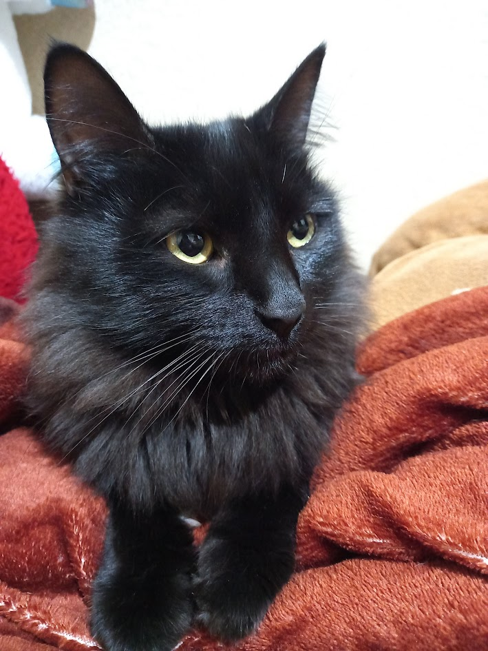

Un poco sobre nosotros
1. El gato doméstico más antiguo que se conoce existió hace 9.500 años Cuela este dato en tu próxima cena con amigos: alucinarán. ¿Sabías que en un principio se pensaba que los egipcios habían domesticado al gato? Pues no. Resulta que, en 2004, unos arqueólogos franceses descubrieron en Chipre la tumba de un gato de 9.500 años de antigüedad. Esto lo convierte en el gato doméstico más antiguo que se conoce, y es anterior al arte egipcio en el que aparecen gatos... en más de 4.000 años.